求占金健米业未来一年涨跌？ 再人
起卦时间：2008年01月04日19时44分（小寒： 1月06日07时21分）
年建：丁亥 月建：壬子 日建：癸卯 时建：壬戌 （辰巳空）
旬空：午未 寅卯 辰巳 子丑
六神 伏神 震宫：雷地豫（六合）
【本 卦】
白虎 ▅▅ ▅▅ 妻财庚戌土
滕蛇 ▅▅ ▅▅ 官鬼庚申金
勾陈 ▅▅▅▅▅ 应 子孙庚午火
朱雀 ▅▅ ▅▅ 兄弟乙卯木
青龙 ▅▅ ▅▅ 子孙乙巳火
玄武 父母庚子水 ▅▅ ▅▅ 世 妻财乙未土
午月（子孙值月，却是大跌），应是冲了伏神暗动。（以起卦年月支还是流年年支均是旺）
未月财爻值月，涨。
亥月（父母值月）却是冲了旬空之巳火冲实，而涨（旬空不论旺衰，因为巳火以年月支都是弱）
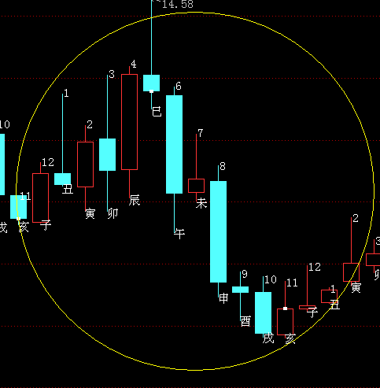
断：卦遇六合，福生财爻，内因极佳，是一支好股。妻财未土和戌土为用神，月休日克，主目
前价位很低，还有很大的上涨空间。今福神午火月破为病、日建卯木合克用神亦为病。两
病得治，用与元神有用之时，必大涨。
验：1、起卦当日收盘价为10.09元，此日后之6日（周日）交小寒节，进入丑土月，至2月1日（周五）止，因股市遭遇重创，月末收盘于7.93元，丑土之月净跌2.16元，跌幅21.41％。
卦理：丑土作灾星，冲破午未之合；且用神未土，遭遇月破。
2、至3月5 日惊蛰收盘于11.85元，寅木之月净涨3.92元，涨幅49.43％。
卦理：午火作元神长生于月建。
3、至4月4日清明节收盘价为8.92元，卯木之月净跌2.93元，跌幅24.73％。
卦理：卯木作忌神，紧紧合克戌土用神。
4、至5月5日立夏收盘价为12.01元，辰土之月净涨3.09元，涨幅34.64％。
卦理：辰土为救星，冲破卯戌之合。
5、至6月5日芒种（周四）收盘价为 元，巳火之月净涨 元，涨幅 ％。
卦理：巳火作元神，入卦，生扶用神。
6、至7月7日小暑节（周一）收盘价为 元，午火之月净涨 元，涨幅 ％。
卦理：午火作元神，入卦，生合用神未土。
7、至8月7日（周四）立秋节收盘于 元，未土之月净涨 元，涨幅 ％。
卦理：未土用神值月当令。
占事：600116三峡水利下周涨跌
排卦：元亨利贞网六爻在线排盘系统 http://www.china95.net
公历起卦时间：2016年1月29日16时51分 (电脑自动)
干支：乙未年 己丑月 庚戌日 甲申时 （日空：寅卯）
神煞：驿马－申 桃花－卯 日禄－申 贵人－丑，未
震宫：雷地豫 (六合) 震宫：雷地豫 (六合)
六神 伏神 本 卦 变 卦
腾蛇 妻财庚戌土 ▅▅ ▅▅ 妻财庚戌土 ▅▅ ▅▅
勾陈 官鬼庚申金 ▅▅ ▅▅ 官鬼庚申金 ▅▅ ▅▅
朱雀 子孙庚午火 ▅▅▅▅▅ 应 子孙庚午火 ▅▅▅▅▅ 应
青龙 兄弟乙卯木 ▅▅ ▅▅ 兄弟乙卯木 ▅▅ ▅▅
玄武 子孙乙巳火 ▅▅ ▅▅ 子孙乙巳火 ▅▅ ▅▅
白虎 父母庚子水 妻财乙未土 ▅▅ ▅▅ 世 妻财乙未土 ▅▅ ▅▅ 世
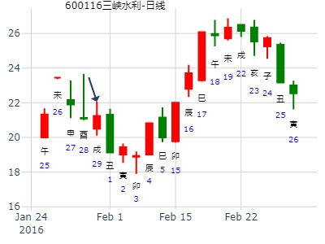
2020年海螺水泥走势。雷地豫静卦。子化财。.md
时间: 2020-01-07 17时35分
干支: 己亥年丁丑月己酉日 (旬空: 寅卯 )
豫静卦
勾陈 ▅▅ ▅▅ 妻财戌土
朱雀 ▅▅ ▅▅ 官鬼申金
青龙 ▅▅▅▅▅ 子孙午火 应
玄武 ▅▅ ▅▅ 兄弟卯木
白虎 ▅▅ ▅▅ 子孙巳火
腾蛇 父母子水▅▅ ▅▅ 妻财未土 世
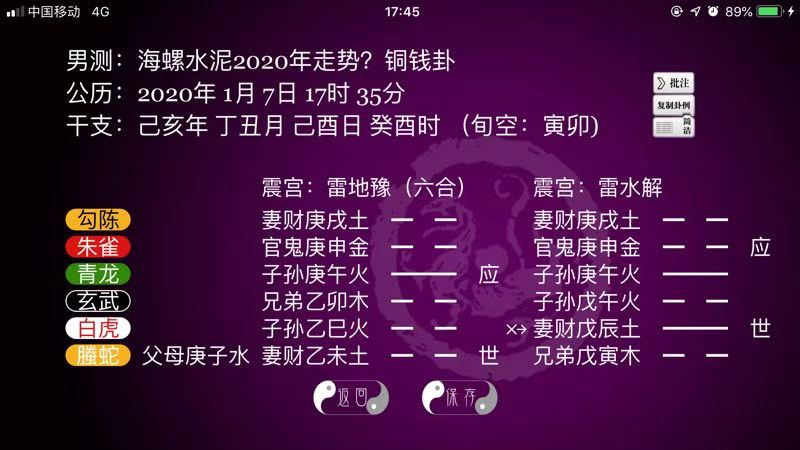
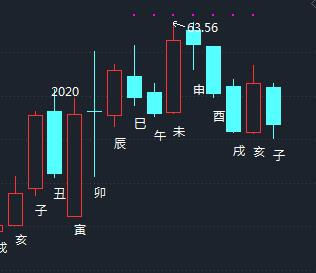
主帖标题: 1月4至1月8日大盘预测(日测)
明天周二涨跌
公历时间：2021年1月4日19时4分
干 支：庚子年 戊子月 壬子日 庚戌时
旬 空：辰巳 午未 寅卯 寅卯
神 煞：驿马─寅 桃花─酉 日禄─亥 贵人─巳，卯
中国预测网纳甲六爻排盘
震宫：雷地豫（六合）
六神 伏 神 【本 卦】
白虎 ▄▄ ▄▄ 妻财庚戌土
螣蛇 ▄▄ ▄▄ 官鬼庚申金
勾陈 ▄▄▄▄▄ 子孙庚午火 应
朱雀 ▄▄ ▄▄ 兄弟乙卯木
青龙 ▄▄ ▄▄ 子孙乙巳火
玄武 父母庚子水 ▄▄ ▄▄ 妻财乙未土 世
问上证寅月是涨还是跌？ 雷地豫静卦。.md
2022年1月28日12时42分 (在线摇卦)
干支：辛丑年 辛丑月 辛巳日 甲午时 （日空：申酉）
震宫：雷地豫 (六合) 震宫：雷地豫 (六合)
六神 伏神 本 卦 变 卦
螣蛇 妻财庚戌土 ▅▅ ▅▅ 妻财庚戌土 ▅▅ ▅▅
勾陈 官鬼庚申金 ▅▅ ▅▅ 官鬼庚申金 ▅▅ ▅▅
朱雀 子孙庚午火 ▅▅▅▅▅ 应 子孙庚午火 ▅▅▅▅▅ 应
青龙 兄弟乙卯木 ▅▅ ▅▅ 兄弟乙卯木 ▅▅ ▅▅
玄武 子孙乙巳火 ▅▅ ▅▅ 子孙乙巳火 ▅▅ ▅▅
白虎 父母庚子水 妻财乙未土 ▅▅ ▅▅ 世 妻财乙未土 ▅▅ ▅▅ 世
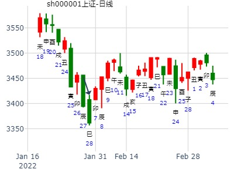
纳甲六爻在线排盘婚否： 出生年:1971 性别：女
占事：1.20-24大盘
起卦方式：手动摇卦
六爻排盘http://paipan.9d19.com/6y.asp
公历时间：2017年2月20日9时30分
农历时间：丁酉年 正月二十四日巳时
干 支：丁酉年 壬寅月 戊寅日 丁巳时
旬 空：辰巳 辰巳 申酉 子丑
神 煞：驿马─申 桃花─卯 日禄─巳 贵人─丑，未
震宫：雷地豫（六合）
六神 伏 神 【本 卦】
朱雀 ▄▄ ▄▄ 妻财庚戌土
青龙 ▄▄ ▄▄ 官鬼庚申金
玄武 ▄▄▄▄▄ 子孙庚午火 应
白虎 ▄▄ ▄▄ 兄弟乙卯木
螣蛇 ▄▄ ▄▄ 子孙乙巳火
勾陈 父母庚子水 ▄▄ ▄▄ 妻财乙未土 世
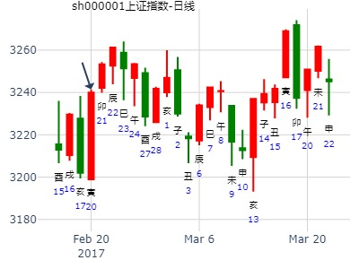
试测上证2021.2.1庚辰一-2.5甲申哪日顶？
上证2021.2.1庚辰一-2.5甲申哪日顶？
男 占事：没填
公历起卦时间：2021年2月2日8时49分 (电脑自动)
干支：庚子年 己丑月 辛巳日 壬辰时 （日空：申酉）
震宫：雷地豫 (六合) 震宫：雷地豫 (六合)
六神 伏神 本 卦 变 卦
螣蛇 妻财庚戌土 ▅▅ ▅▅ 妻财庚戌土 ▅▅ ▅▅
勾陈 官鬼庚申金 ▅▅ ▅▅ 官鬼庚申金 ▅▅ ▅▅
朱雀 子孙庚午火 ▅▅▅▅▅ 应 子孙庚午火 ▅▅▅▅▅ 应
青龙 兄弟乙卯木 ▅▅ ▅▅ 兄弟乙卯木 ▅▅ ▅▅
玄武 子孙乙巳火 ▅▅ ▅▅ 子孙乙巳火 ▅▅ ▅▅
白虎 父母庚子水 妻财乙未土 ▅▅ ▅▅ 世 妻财乙未土 ▅▅ ▅▅ 世
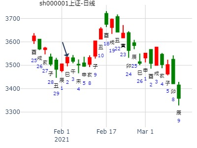
2024-02-20_中联重科_豫静卦
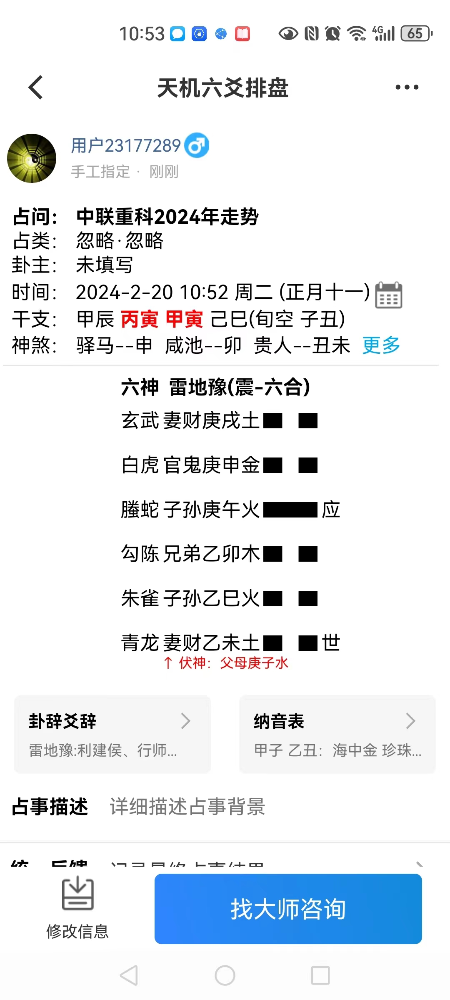
时间: 2024-02-20 10：52
干支: 甲辰年丙寅月甲寅日 (旬空: 子丑 )
豫静卦
玄武 ▅▅ ▅▅ 妻财戌土
白虎 ▅▅ ▅▅ 官鬼申金
腾蛇 ▅▅▅▅▅ 子孙午火 应
勾陈 ▅▅ ▅▅ 兄弟卯木
朱雀 ▅▅ ▅▅ 子孙巳火
青龙 ▅▅ ▅▅ 妻财未土 世
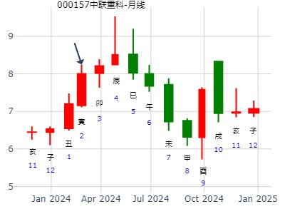
3月6日大盘：雷地豫静卦。.md
公历：2017年3月6日9时25分，星期一。
农历：丁酉年 二月 初九日 巳时。
神煞：驿马-寅 桃花-酉 干禄-亥 贵人-卯、巳
干支：丁酉年 癸卯月 壬辰日 乙巳时 (卦身：午)
主变卦 雷地豫(震宫) [空亡:午、未]
白虎 ▅▅ ▅▅ 妻财庚戌土
螣蛇 ▅▅ ▅▅ 官鬼庚申金
勾陈 ▅▅▅▅▅ 子孙庚午火 应
朱雀 ▅▅ ▅▅ 兄弟乙卯木
青龙 ▅▅ ▅▅ 子孙乙巳火
玄武 父母庚子水 ▅▅ ▅▅ 妻财乙未土 世
走势很明确，这卦也很明确 |

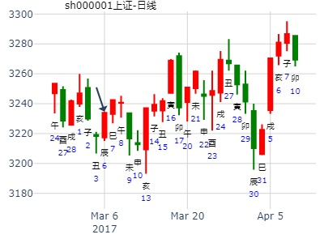
天机六爻排盘
2024年3月25日 11:26
占问：石英股份2024年走势，by风生水起
甲辰年 丁卯月 戊子日 戊午时 (旬空：午未)
本卦：雷地豫/震宫(六合)
变卦：雷地豫/震宫(六合)
雀 财戌 -- 财戌 --
龙 官申 -- 官申 --
玄 孙午 — 应 孙午 — 应
虎 兄卯 -- 兄卯 --
蛇 孙巳 -- 孙巳 --
勾 父子 财未 -- 世 财未 -- 世
世应皆空，经典误导卦
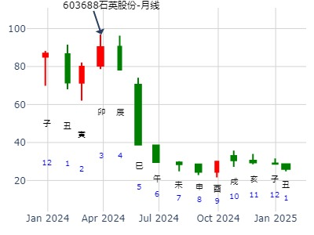
求测人：教授
起卦方式：铜钱摇卦 占问事宜：西藏矿业持有
起卦公历：2015年4月1日21时5分(北京时间)。
干支： 乙未年 己卯月 丁未日 辛亥时 (卦身：午)
主变卦 雷地豫(震宫) [空亡:寅、卯]
青龙 ━ ━ 妻财庚戌土
玄武 ━ ━ 官鬼庚申金
白虎 ━━━ 子孙庚午火 应
螣蛇 ━ ━ 兄弟乙卯木
勾陈 ━ ━ 子孙乙巳火
朱雀 父母庚子水 ━ ━ 妻财乙未土 世
7日前兄弟卯值月，逢官鬼值日制兄为涨。7日后辰月，14-15日逢申酉为鬼泄财为跌。
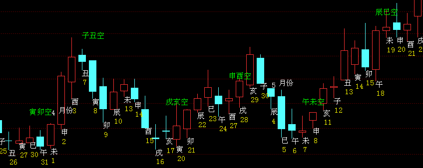
占事：002668到下周末
时间：2015年4月3日11点50分 星期五
干支：乙未年 己卯月 己酉日 庚午时
卯月 己酉日（旬空：寅卯）
六神 藏爻 雷地豫 震宫
勾陈 ■■ ■■妻财戌土
朱雀 ■■ ■■官鬼申金
青龙 ■■■■■■子孙午火 应
玄武 妻财辰土■■ ■■兄弟卯木
白虎 兄弟寅木■■ ■■子孙巳火
腾蛇 父母子水■■ ■■妻财未土 世
此卦，兄弟卯木旬空被冲实（相当于暗动），实际寅卯值日反而涨。辰冲戌破，假涨实跌。酉日不是冲实，而是冲破兄弟而大涨（起卦日不算）
丑日冲高回落。15日酉反而是当冲实（原始旬空的卯）而大跌。
利建侯行师。
周,卦经典：雷地豫静卦。又是顶级建仓卦。虽然辰月戌财月破，却是难得的主动买点。奥马电器到下周末。002668.pdf
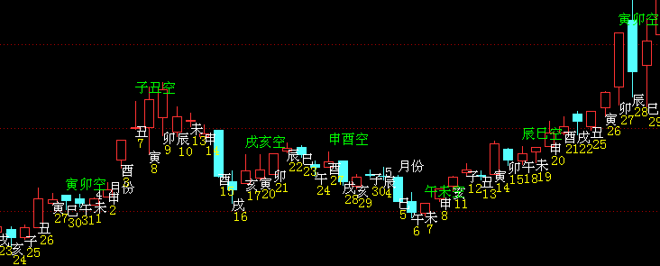
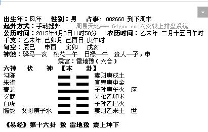
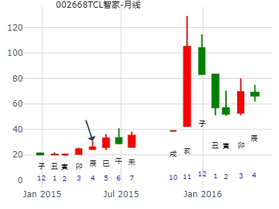
上海电气短线。雷地豫静卦。暴涨。.md
时间: 2015-04-10
干支: 乙未年庚辰月丙辰日 (旬空: 子丑 )
豫静卦
青龙 ▅▅ ▅▅ 妻财戌土
玄武 ▅▅ ▅▅ 官鬼申金
白虎 ▅▅▅▅▅ 子孙午火 应
腾蛇 ▅▅ ▅▅ 兄弟卯木
勾陈 ▅▅ ▅▅ 子孙巳火
朱雀 父母子水▅▅ ▅▅ 妻财未土 世
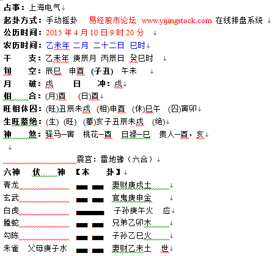
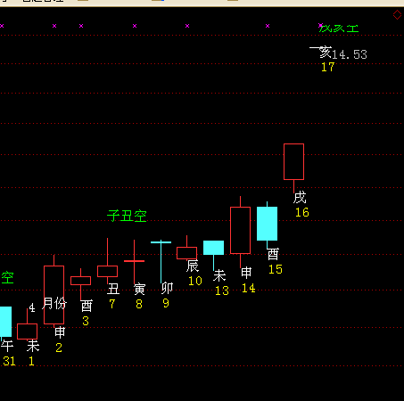
中信国安辰月——乾隆币卦
公历时间：2016年4月7日9时26分
干 支：丙申年 壬辰月 己未日 己巳时
旬 空：辰巳 午未 (子丑) 戌亥
震宫：雷地豫（六合）
六神 伏 神 【本 卦】
勾陈 ▄▄ ▄▄ 妻财庚戌土
朱雀 ▄▄ ▄▄ 官鬼庚申金
青龙 ▄▄▄▄▄ 子孙庚午火 应
玄武 ▄▄ ▄▄ 兄弟乙卯木
白虎 ▄▄ ▄▄ 子孙乙巳火
螣蛇 父母庚子水 ▄▄ ▄▄ 妻财乙未土 世
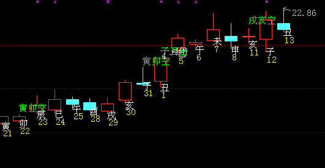
华东科技在十天内的走势
时间: 2019-04-23 17;45
干支: 己亥年戊辰月庚寅日 (旬空: 午未 )
豫静卦
腾蛇 ▅▅ ▅▅ 妻财戌土
勾陈 ▅▅ ▅▅ 官鬼申金
朱雀 ▅▅▅▅▅ 子孙午火 应
青龙 ▅▅ ▅▅ 兄弟卯木
玄武 ▅▅ ▅▅ 子孙巳火
白虎 父母子水▅▅ ▅▅ 妻财未土 世
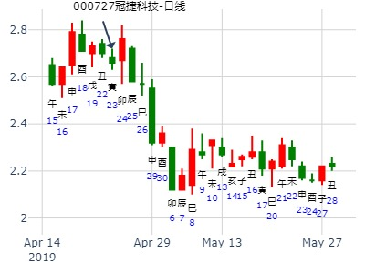
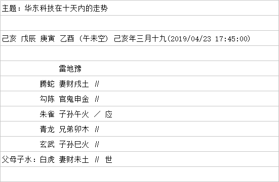
关注：测神马股份何时涨停？
测神马股份4.3-4.10顶？
排卦：元亨利贞网六爻在线排盘系统 http://www.china95.net
公历起卦时间：2020年4月3日14时16分 (电脑自动)
干支：庚子年 己卯月 丙子日 乙未时 （日空：申酉）
神煞：驿马－寅 桃花－酉 日禄－巳 贵人－酉，亥
震宫：雷地豫 (六合) 震宫：雷地豫 (六合)
六神 伏神 本 卦 变 卦
青龙 妻财庚戌土 ▅▅ ▅▅ 妻财庚戌土 ▅▅ ▅▅
玄武 官鬼庚申金 ▅▅ ▅▅ 官鬼庚申金 ▅▅ ▅▅
白虎 子孙庚午火 ▅▅▅▅▅ 应 子孙庚午火 ▅▅▅▅▅ 应
螣蛇 兄弟乙卯木 ▅▅ ▅▅ 兄弟乙卯木 ▅▅ ▅▅
勾陈 子孙乙巳火 ▅▅ ▅▅ 子孙乙巳火 ▅▅ ▅▅
朱雀 父母庚子水 妻财乙未土 ▅▅ ▅▅ 世 妻财乙未土 ▅▅ ▅▅ 世
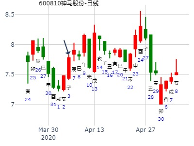
主帖标题: 5月13日开始：近期大盘走势如何？！
干支：辛卯年 癸巳月 丁卯日 辛亥时 （日空：戌亥）
神煞：驿马－巳 桃花－子 日禄－午 贵人－酉，亥
震宫：雷地豫 (六合) 震宫：雷地豫 (六合)
六神 伏神 本 卦 变 卦
青龙 妻财庚戌土 ▅▅ ▅▅ 妻财庚戌土 ▅▅ ▅▅
玄武 官鬼庚申金 ▅▅ ▅▅ 官鬼庚申金 ▅▅ ▅▅
白虎 子孙庚午火 ▅▅▅▅▅ 应 子孙庚午火 ▅▅▅▅▅ 应
腾蛇 兄弟乙卯木 ▅▅ ▅▅ 兄弟乙卯木 ▅▅ ▅▅
勾陈 子孙乙巳火 ▅▅ ▅▅ 子孙乙巳火 ▅▅ ▅▅
朱雀 父母庚子水 妻财乙未土 ▅▅ ▅▅ 世 妻财乙未土 ▅▅ ▅▅ 世

主帖标题: 5.6大盘下午走势如何
公历起卦时间：2020年5月6日12时20分 (电脑自动)
干支：庚子年 辛巳月 己酉日 庚午时 （日空：寅卯）
震宫：雷地豫 (六合) 震宫：雷地豫 (六合)
六神 伏神 本 卦 变 卦
勾陈 妻财庚戌土 ▅▅ ▅▅ 妻财庚戌土 ▅▅ ▅▅
朱雀 官鬼庚申金 ▅▅ ▅▅ 官鬼庚申金 ▅▅ ▅▅
青龙 子孙庚午火 ▅▅▅▅▅ 应 子孙庚午火 ▅▅▅▅▅ 应
玄武 兄弟乙卯木 ▅▅ ▅▅ 兄弟乙卯木 ▅▅ ▅▅
白虎 子孙乙巳火 ▅▅ ▅▅ 子孙乙巳火 ▅▅ ▅▅
螣蛇 父母庚子水 妻财乙未土 ▅▅ ▅▅ 世 妻财乙未土 ▅▅ ▅▅ 世
匀速上涨，幅度略大
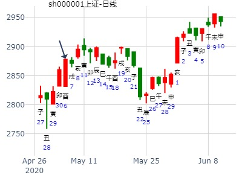
航天长峰合涨到18.80？
男 占事：没填
公历起卦时间：2020年5月18日13时58分 (电脑自动)
干支：庚子年 辛巳月 辛酉日 乙未时 （日空：子丑）
震宫：雷地豫 (六合) 震宫：雷地豫 (六合)
六神 伏神 本 卦 变 卦
螣蛇 妻财庚戌土 ▅▅ ▅▅ 妻财庚戌土 ▅▅ ▅▅
勾陈 官鬼庚申金 ▅▅ ▅▅ 官鬼庚申金 ▅▅ ▅▅
朱雀 子孙庚午火 ▅▅▅▅▅ 应 子孙庚午火 ▅▅▅▅▅ 应
青龙 兄弟乙卯木 ▅▅ ▅▅ 兄弟乙卯木 ▅▅ ▅▅
玄武 子孙乙巳火 ▅▅ ▅▅ 子孙乙巳火 ▅▅ ▅▅
白虎 父母庚子水 妻财乙未土 ▅▅ ▅▅ 世 妻财乙未土 ▅▅ ▅▅ 世
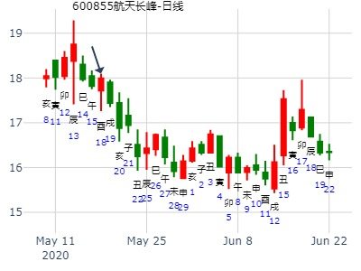
雷地豫，王卜筮卦，占事：房产交易类财运如何？上上卦
排卦：元亨利贞网六爻在线排盘系统 http://www.china95.net
公历起卦时间：2010年6月29日18时43分 (手工指定)
干支：庚寅年 壬午月 庚戌日 乙酉时 （日空：寅卯）
震宫：雷地豫 (六合) 震宫：雷地豫 (六合)
六神 伏神 本 卦 变 卦
腾蛇 妻财庚戌土 ▅▅ ▅▅ 妻财庚戌土 ▅▅ ▅▅
勾陈 官鬼庚申金 ▅▅ ▅▅ 官鬼庚申金 ▅▅ ▅▅
朱雀 子孙庚午火 ▅▅▅▅▅ 应 子孙庚午火 ▅▅▅▅▅ 应
青龙 兄弟乙卯木 ▅▅ ▅▅ 兄弟乙卯木 ▅▅ ▅▅
玄武 子孙乙巳火 ▅▅ ▅▅ 子孙乙巳火 ▅▅ ▅▅
白虎 父母庚子水 妻财乙未土 ▅▅ ▅▅ 世 妻财乙未土 ▅▅ ▅▅ 世
《周易》——雷地豫 震上坤下
豫：利建侯行师。彖曰：豫，刚应而志行，顺以动，豫。豫，顺以动，故天地如之，而况建侯行师乎？天地以顺动，故日月不过，而四时不忒；圣人以顺动，则刑罚清而民服。 豫之时义大矣哉！象曰：雷出地奋，豫。 先王以作乐崇德，殷荐之上帝，以配祖考。
占事：下周大盘走势如何 午月戌日，跌。
排卦：元亨利贞网六爻在线排盘系统 http://www.china95.net
公历起卦时间：2015年6月27日21时56分 (在线摇卦)
干支：乙未年 壬午月 甲戌日 乙亥时 （日空：申酉）
神煞：驿马－申 桃花－卯 日禄－寅 贵人－丑，未
震宫：雷地豫 (六合)
六神 伏神 本 卦
玄武 妻财庚戌土 ▅▅ ▅▅
白虎 官鬼庚申金 ▅▅ ▅▅
腾蛇 子孙庚午火 ▅▅▅▅▅ 应
勾陈 兄弟乙卯木 ▅▅ ▅▅
朱雀 子孙乙巳火 ▅▅ ▅▅
青龙 父母庚子水 妻财乙未土 ▅▅ ▅▅ 世
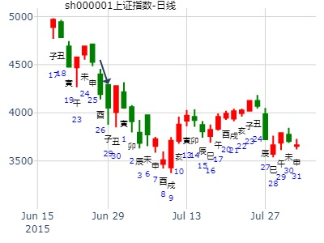
地豫静卦，6月20日大盘
公历起卦时间：2019年6月20日8时24分 (手工指定)
干支：己亥年 庚午月 戊子日 丙辰时 （日空：午未）
神煞：驿马－寅 桃花－酉 日禄－巳 贵人－丑，未
震宫：雷地豫 (六合) 震宫：雷地豫 (六合)
六神 伏神 本 卦 变 卦
朱雀 妻财庚戌土 ▅▅ ▅▅ 妻财庚戌土 ▅▅ ▅▅
青龙 官鬼庚申金 ▅▅ ▅▅ 官鬼庚申金 ▅▅ ▅▅
玄武 子孙庚午火 ▅▅▅▅▅ 应 子孙庚午火 ▅▅▅▅▅ 应
白虎 兄弟乙卯木 ▅▅ ▅▅ 兄弟乙卯木 ▅▅ ▅▅
腾蛇 子孙乙巳火 ▅▅ ▅▅ 子孙乙巳火 ▅▅ ▅▅
勾陈 父母庚子水 妻财乙未土 ▅▅ ▅▅ 世 妻财乙未土 ▅▅ ▅▅ 世

航天长峰6.8壬午星期一-6.10甲申何时顶？
公历起卦时间：2020年6月10日7时15分 (电脑自动)
干支：庚子年 壬午月 甲申日 戊辰时 （日空：午未）
神煞：驿马－寅 桃花－酉 日禄－寅 贵人－丑，未
震宫：雷地豫 (六合) 震宫：雷地豫 (六合)
六神 伏神 本 卦 变 卦
玄武 妻财庚戌土 ▅▅ ▅▅ 妻财庚戌土 ▅▅ ▅▅
白虎 官鬼庚申金 ▅▅ ▅▅ 官鬼庚申金 ▅▅ ▅▅
螣蛇 子孙庚午火 ▅▅▅▅▅ 应 子孙庚午火 ▅▅▅▅▅ 应
勾陈 兄弟乙卯木 ▅▅ ▅▅ 兄弟乙卯木 ▅▅ ▅▅
朱雀 子孙乙巳火 ▅▅ ▅▅ 子孙乙巳火 ▅▅ ▅▅
青龙 父母庚子水 妻财乙未土 ▅▅ ▅▅ 世 妻财乙未土 ▅▅ ▅▅ 世
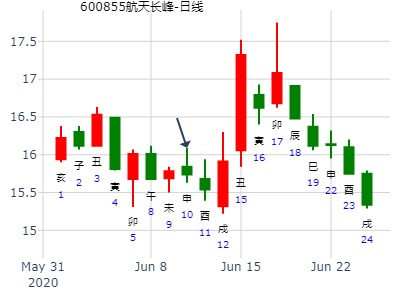
6.3日北方华创收盘走势？
出生：2021 年 性别：男 占事：没填
排卦：元亨利贞网六爻在线排盘系统 https://www.china95.net
公历起卦时间：2021年6月3日7时8分 (电脑自动)
干支：辛丑年 癸巳月 壬午日 甲辰时 （日空：申酉）
神煞：驿马－申 桃花－卯 日禄－亥 贵人－卯，巳
震宫：雷地豫 (六合) 震宫：雷地豫 (六合)
六神 伏神 本 卦 变 卦
白虎 妻财庚戌土 ▅▅ ▅▅ 妻财庚戌土 ▅▅ ▅▅
螣蛇 官鬼庚申金 ▅▅ ▅▅ 官鬼庚申金 ▅▅ ▅▅
勾陈 子孙庚午火 ▅▅▅▅▅ 应 子孙庚午火 ▅▅▅▅▅ 应
朱雀 兄弟乙卯木 ▅▅ ▅▅ 兄弟乙卯木 ▅▅ ▅▅
青龙 子孙乙巳火 ▅▅ ▅▅ 子孙乙巳火 ▅▅ ▅▅
玄武 父母庚子水 妻财乙未土 ▅▅ ▅▅ 世 妻财乙未土 ▅▅ ▅▅ 世
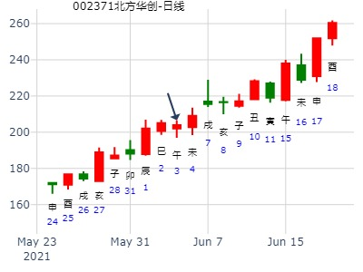
主帖标题: 000567...600110五月能升吗
002657下周走势
起卦公历：2021年6月5日17时17分(北京时间)
起卦
干支： 辛丑年 癸巳月 甲申日 癸酉时 (卦身：午)
主变卦 雷地豫(震宫) [空亡:午、未]
玄武 ━ ━ 妻财辰土
白虎 ━ ━ 兄弟寅木
螣蛇 ━━━ 父母子水 应
勾陈 ━ ━ 兄弟卯木
朱雀 ━ ━ 子孙巳火
青龙 ━ ━ 妻财未土 世
此股票股性半死不活，下周一和周四能涨。
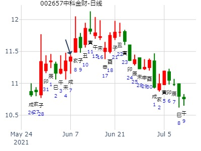
新湖创业[600840]何时买入得财？ 2007-07-03
丁亥年丙午月戊戌日己未时 (辰巳空)
丁亥年五月十九(2007/07/03 13:08:11)
雷地豫
朱雀 妻财戌土∥
青龙 官鬼申金∥
玄武 子孙午火／应
白虎 兄弟卯木∥
腾蛇 子孙巳火∥
父母 子水：勾陈妻财未土∥世
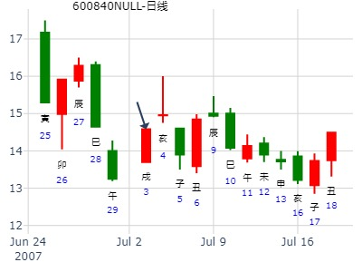
占事：002009
起卦方式：手动摇卦 易经股市论坛 www.yijingstock.com 在线排盘系统
公历时间：2013年7月16日9时0分
干 支：癸巳年 己未月 癸未日 丁巳时
旬 空：午未 子丑 (申酉) 子丑
震宫：雷地豫（六合）
六神 伏 神 【本 卦】
白虎 ▄▄ ▄▄ 妻财庚戌土
螣蛇 ▄▄ ▄▄ 官鬼庚申金
勾陈 ▄▄▄▄▄ 子孙庚午火 应
朱雀 ▄▄ ▄▄ 兄弟乙卯木
青龙 ▄▄ ▄▄ 子孙乙巳火
玄武 父母庚子水 ▄▄ ▄▄ 妻财乙未土 世
断：未土才旺相持世收阳。
低开回落横向震荡收涨0.02、0.2%的小阳。
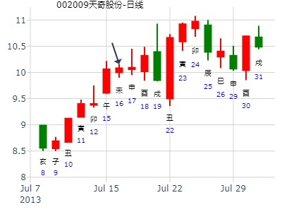
下周大盘721-725
公历时间：2014年7月19日9时54分
干支：甲午年 辛未月 辛卯日 癸巳时
旬空：辰巳 戌亥 午未 午未
震宫：雷地豫（六合）
六神 伏 神 【本 卦】
螣蛇 ▄▄ ▄▄ 妻财庚戌土
勾陈 ▄▄ ▄▄ 官鬼庚申金
朱雀 ▄▄▄▄▄ 子孙庚午火 应
青龙 ▄▄ ▄▄ 兄弟乙卯木
玄武 ▄▄ ▄▄ 子孙乙巳火
白虎 父母庚子水 ▄▄ ▄▄ 妻财乙未土 世
世应空，不影响建仓卦，后面大涨。
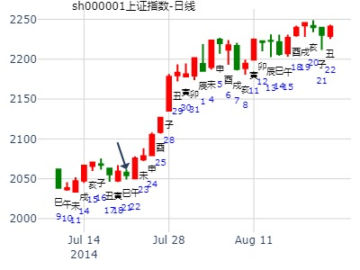
2022-07-27 10：58 金玉堂-铜钱卦222122
占事：美联新材到国庆
时间: 2022-07-27
干支: 壬寅年丁未月辛巳日 (旬空: 申酉 )
豫静卦
腾蛇 ▅▅ ▅▅ 妻财戌土
勾陈 ▅▅ ▅▅ 官鬼申金
朱雀 ▅▅▅▅▅ 子孙午火 应
青龙 ▅▅ ▅▅ 兄弟卯木
玄武 ▅▅ ▅▅ 子孙巳火
白虎 ▅▅ ▅▅ 妻财未土 世
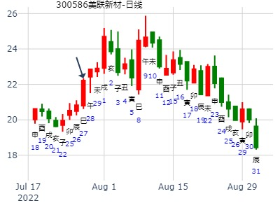
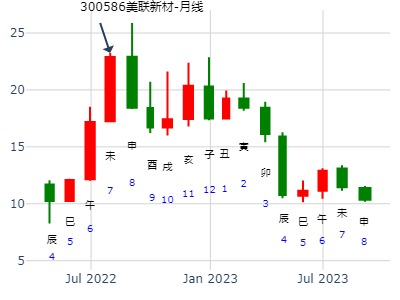
美联新材8月-9月-国庆。雷地豫静卦。
时间: 2022-07-28 10时58分
干支: 壬寅年丁未月壬午日 (旬空: 申酉 )
豫静卦
白虎 ▅▅ ▅▅ 妻财戌土
腾蛇 ▅▅ ▅▅ 官鬼申金
勾陈 ▅▅▅▅▅ 子孙午火 应
朱雀 ▅▅ ▅▅ 兄弟卯木
青龙 ▅▅ ▅▅ 子孙巳火
玄武 父母子水▅▅ ▅▅ 妻财未土 世
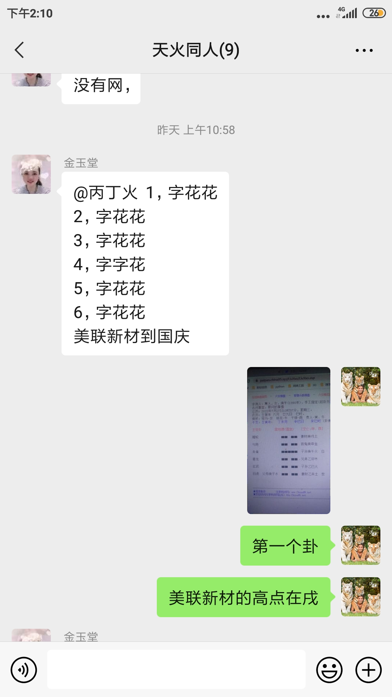
问借款能否成功。
时间: 1996-08-14
干支: 丙子年丙申月癸未日 (旬空: 申酉 )
豫静卦
白虎 ▅▅ ▅▅ 妻财戌土
腾蛇 ▅▅ ▅▅ 官鬼申金
勾陈 ▅▅▅▅▅ 子孙午火 应
朱雀 ▅▅ ▅▅ 兄弟卯木
青龙 ▅▅ ▅▅ 子孙巳火
玄武 父母子水▅▅ ▅▅ 妻财未土 世
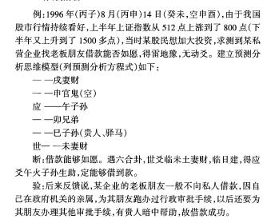
2周上证222122--经典建仓卦：9月第1周9月第2周。雷地豫静卦。（辰戌冲的象）
时间: 2015-08-30
干支: 乙未年甲申月戊寅日 (旬空: 申酉 )
豫静卦
朱雀 ▅▅ ▅▅ 妻财戌土
青龙 ▅▅ ▅▅ 官鬼申金
玄武 ▅▅▅▅▅ 子孙午火 应
白虎 ▅▅ ▅▅ 兄弟卯木
腾蛇 ▅▅ ▅▅ 子孙巳火
勾陈 父母子水▅▅ ▅▅ 妻财未土 世
在枫田石溪村打坐摇卦，当中有小牛卖价5000附近的外应事件发生。
利建侯行师。9月3日阅兵，气场共震，军工航空也是最强。利军工行师。
利建仓。卯日兄弟值日，跌。实际分化，深综创业跌，上证假阳下影线。
辰日冲戌土，下影线。分化行情，辰涨则戌跌，银行涨则其他跌的象（上证凑合，深综与创业板跌惨了，又1000多个跌停）
巳日大幅低开4%多，慢慢收红。（原因可以是巳合起官鬼申来）
马后炮：
实际可作下半年卦用：戌财在高位，涨到戌月就差不多了。
子月应爻子孙月破，跌。丑月世爻月破，暴跌。
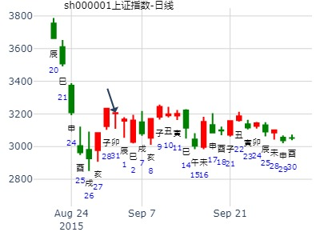
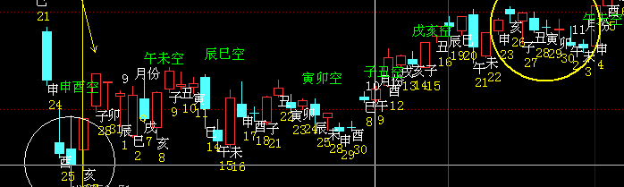

同周卦参考：8月末9月第1周上证。豫之复。
主帖标题: 上证到2020年10月15日走势
排卦：元亨利贞网六爻在线排盘系统
公历起卦时间：2020年9月24日14时21分 (在线摇卦)
干支：庚子年 乙酉月 庚午日 癸未时 （日空：戌亥）
神煞：驿马－申 桃花－卯 日禄－申 贵人－丑，未
震宫：雷地豫 (六合) 震宫：雷地豫 (六合)
六神 伏神 本 卦 变 卦
螣蛇 妻财庚戌土 ▅▅ ▅▅ 妻财庚戌土 ▅▅ ▅▅
勾陈 官鬼庚申金 ▅▅ ▅▅ 官鬼庚申金 ▅▅ ▅▅
朱雀 子孙庚午火 ▅▅▅▅▅ 应 子孙庚午火 ▅▅▅▅▅ 应
青龙 兄弟乙卯木 ▅▅ ▅▅ 兄弟乙卯木 ▅▅ ▅▅
玄武 子孙乙巳火 ▅▅ ▅▅ 子孙乙巳火 ▅▅ ▅▅
白虎 父母庚子水 妻财乙未土 ▅▅ ▅▅ 世 妻财乙未土 ▅▅ ▅▅ 世
一路逼空诱多，请君入瓮

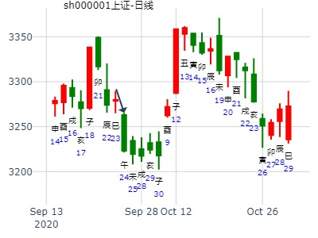
占事：绿地控股在十月-金硬币卦
时间: 2024-09-28
干支: 甲辰年癸酉月乙未日 (旬空: 辰巳 )
豫静卦
玄武 ▅▅ ▅▅ 妻财戌土
白虎 ▅▅ ▅▅ 官鬼申金
腾蛇 ▅▅▅▅▅ 子孙午火 应
勾陈 ▅▅ ▅▅ 兄弟卯木
朱雀 ▅▅ ▅▅ 子孙巳火
青龙 ▅▅ ▅▅ 妻财未土 世
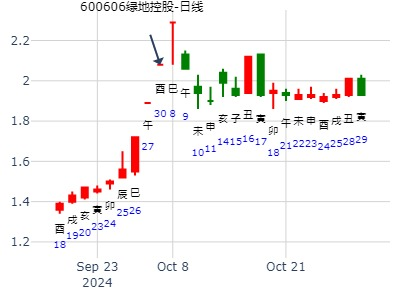
雷地豫静卦，涨。2010-10-29
占事： 测下周11月1日-5日大盘走势如何？
公历起卦时间：2010年10月29日14时48分 (手工指定)
立冬：2010年11月07日21时01分
干支：庚寅年 丙戌月 壬子日 丁未时 （日空：寅卯）
震宫：雷地豫 (六合) 震宫：雷地豫 (六合)
六神 伏神 本 卦 变 卦
白虎 妻财庚戌土 ▅▅ ▅▅ 妻财庚戌土 ▅▅ ▅▅
腾蛇 官鬼庚申金 ▅▅ ▅▅ 官鬼庚申金 ▅▅ ▅▅
勾陈 子孙庚午火 ▅▅▅▅▅ 应 子孙庚午火 ▅▅▅▅▅ 应
朱雀 兄弟乙卯木 ▅▅ ▅▅ 兄弟乙卯木 ▅▅ ▅▅
青龙 子孙乙巳火 ▅▅ ▅▅ 子孙乙巳火 ▅▅ ▅▅
玄武 父母庚子水 妻财乙未土 ▅▅ ▅▅ 世 妻财乙未土 ▅▅ ▅▅ 世
亥月子孙月破就一路跌。之间还是涨为主。
戌月财值月，辰戌冲影线，午日应爻原来日破的值日大涨。未日世爻值日涨。戌日即为顶。
进入亥月就一路大跌。
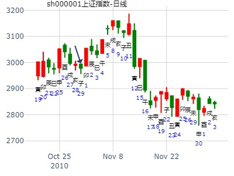
占事：600875东方电气10月走势？ 利建仓。
公历时间：2014年10月14日17时25分
干 支：甲午年 甲戌月 戊午日 辛酉时 旬空：辰巳 申酉 (子丑) 子丑
震宫：雷地豫（六合）
六神 伏 神 【本 卦】
朱雀 ▄▄ ▄▄ 妻财庚戌土
青龙 ▄▄ ▄▄ 官鬼庚申金
玄武 ▄▄▄▄▄ 子孙庚午火 应
白虎 ▄▄ ▄▄ 兄弟乙卯木
螣蛇 ▄▄ ▄▄ 子孙乙巳火
勾陈 父母庚子水 ▄▄ ▄▄ 妻财乙未土 世
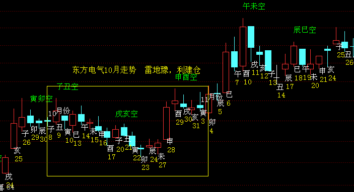
占事: 000001上证指数10-20至10-24日一周趋势预测
起卦方式：手工指定 周易天地www.64gua.com六爻线上排盘系统
公历时间：2014年10月20日9时30分
干支：甲午年 甲戌月 甲子日 己巳时
旬空：辰巳 申酉 戌亥 戌亥
神煞：驿马─寅 桃花─酉 日禄─寅 贵人─丑，未
震宫：雷地豫（六合）
六神 伏 神 【本 卦】
玄武 ▄▄ ▄▄ 妻财庚戌土
白虎 ▄▄ ▄▄ 官鬼庚申金
螣蛇 ▄▄▄▄▄ 子孙庚午火 应
勾陈 ▄▄ ▄▄ 兄弟乙卯木
朱雀 ▄▄ ▄▄ 子孙乙巳火
青龙 父母庚子水 ▄▄ ▄▄ 妻财乙未土 世
预测结论请关注二楼
------------以往预测小结--------------
8、0001上证指数10-15至10-17日半周趋势预测（趋势把握正确）
7、2014-9-22至9-30国庆前两周上证指数预测（只有周一的大跌预测准确，跨两周的趋势预测方向错误。个股选择及买入点正确，盈利15%以上）
6、2014-9-15至9-19上证指数一周预测 （趋势预测正确，提前预测周二大跌“满盘绿油油”，周三起反弹均正确）
http://bbs.64gua.com/read-htm-tid-1521770.html
5、2014-9-9至2014-9-12上证指数一周预测（周一至周四的趋势预测准确，周五上涨回补，整周横盘）
http://bbs.64gua.com/read-htm-tid-1520426.html
4、2014-9-1至9-5上证指数预测 （整周涨势预测准确）
http://bbs.64gua.com/read-htm-tid-1519216.html
3、2014年8月25日至8月29日一周上证指数趋势预测（准确，在周五发布下周涨的趋势，买入点合适）
http://bbs.64gua.com/read-htm-tid-1517866.html
2、2014-8-18至8-22上证指数预测 （趋势预测准确）
http://bbs.64gua.com/read-htm-tid-1516843.html
1、2014年上证指数大盘全年预测 （寅月至目前申月，趋势预测准确）
http://bbs.64gua.com/read-htm-tid-1465142.html
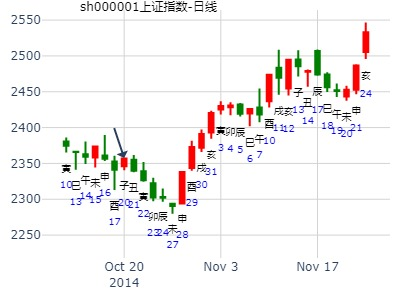
占事：10月周卦：上证自9月24日到2020年10月15日走势
by帝都隐者
公历起卦时间：2020年9月24日14时21分 (在线摇卦)
干支：庚子年乙酉月庚午日癸未时 （日空：戌亥）
震宫：雷地豫 (六合) 震宫：雷地豫 (六合)
螣蛇 妻财庚戌土 ▅▅ ▅▅ 妻财庚戌土 ▅▅ ▅▅
勾陈 官鬼庚申金 ▅▅ ▅▅ 官鬼庚申金 ▅▅ ▅▅
朱雀 子孙庚午火 ▅▅▅▅▅ 应 子孙庚午火 ▅▅▅▅▅ 应
青龙 兄弟乙卯木 ▅▅ ▅▅ 兄弟乙卯木 ▅▅ ▅▅
玄武 子孙乙巳火 ▅▅ ▅▅ 子孙乙巳火 ▅▅ ▅▅
白虎 父母庚子水 妻财乙未土 ▅▅ ▅▅ 世 妻财乙未土 ▅▅ ▅▅ 世
戌空，进入戌月就开涨。
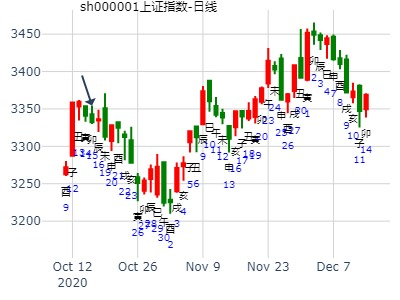
7：21问今天上证指数涨跌-牛教授
时间: 2024-10-11
干支: 甲辰年甲戌月戊申日 (旬空: 寅卯 )
豫静卦
朱雀 ▅▅ ▅▅ 妻财戌土
青龙 ▅▅ ▅▅ 官鬼申金
玄武 ▅▅▅▅▅ 子孙午火 应
白虎 ▅▅ ▅▅ 兄弟卯木
腾蛇 ▅▅ ▅▅ 子孙巳火
勾陈 ▅▅ ▅▅ 妻财未土 世
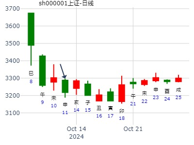
卯日大涨，如果此卦延用，可解释成少数的合起戌土。
占事：君逸数码到11月6日-金玉堂
时间: 2024-10-23
干支: 甲辰年甲戌月庚申日 (旬空: 子丑 )
豫静卦
腾蛇 ▅▅ ▅▅ 妻财戌土
勾陈 ▅▅ ▅▅ 官鬼申金
朱雀 ▅▅▅▅▅ 子孙午火 应
青龙 ▅▅ ▅▅ 兄弟卯木
玄武 ▅▅ ▅▅ 子孙巳火
白虎 ▅▅ ▅▅ 妻财未土 世
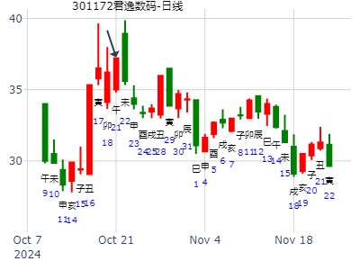
第十七期预测上证指数比赛１７日到２１日
公历时间：2008年11月15日17时43分 星期六
干支：戊子年 癸亥月 己未日 癸酉时 (旬空：子丑)
震宫：雷地豫（六合） 六神 伏 神
勾陈 ▅▅ ▅▅ 妻财庚戌土
朱雀 ▅▅ ▅▅ 官鬼庚申金
青龙 ▅▅▅▅▅ 子孙庚午火 应
玄武 ▅▅ ▅▅ 兄弟乙卯木
白虎 ▅▅ ▅▅ 子孙乙巳火
螣蛇 父母庚子水 ▅▅ ▅▅ 妻财乙未土 世
这是摇卦的信息！
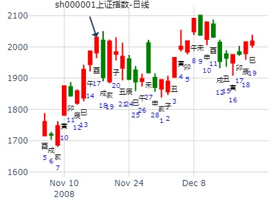
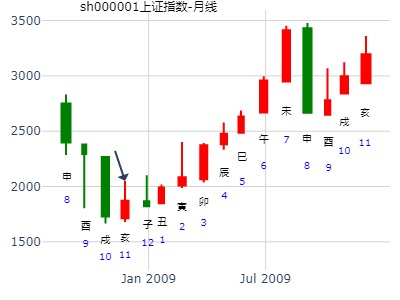
占事：凤凰传媒（上海：601928）今日上市发行每股大涨了三元，想问明天买入此股短线能够获利不，铜钱反面222122
方式：手工指定 性别：男
北京时间：2011年11月30日20时48分 星期三
干支： 辛卯年 己亥月 己丑日 甲戌时 (旬空:午未)
震－雷地豫(六合)
六神 藏 爻 本 卦
勾陈 ▅ ▅ 妻财戌土
朱雀 ▅ ▅ 官鬼申金
青龙 ▅▅▅ 子孙午火 应
玄武 妻财辰土 ▅ ▅ 兄弟卯木
白虎 兄弟寅木 ▅ ▅ 子孙巳火
螣蛇 父母子水 ▅ ▅ 妻财未土 世
应爻代表介入时机，目前应爻不旺，而且真空，说明明天介入很难有财运，加上世爻冲空时效已经过了，说明明天会有低点来临，卦出六合，进去将会被套，而下周一是未日，世财临值，所以我建议在明后天找个机会介入，星期一开始套现。
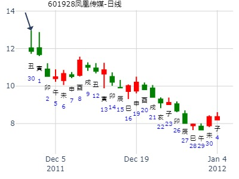
占事：600399抚顺特钢19日涨跌
排卦：元亨利贞网六爻在线排盘系统 http://www.china95.net
公历起卦时间：2013年11月18日15时19分 (电脑自动)
干支：癸巳年 癸亥月 戊子日 庚申时 （日空：午未）
神煞：驿马－寅 桃花－酉 日禄－巳 贵人－丑，未
震宫：雷地豫 (六合) 震宫：雷地豫 (六合)
六神 伏神 本 卦 变 卦
朱雀 妻财庚戌土 ▅▅ ▅▅ 妻财庚戌土 ▅▅ ▅▅
青龙 官鬼庚申金 ▅▅ ▅▅ 官鬼庚申金 ▅▅ ▅▅
玄武 子孙庚午火 ▅▅▅▅▅ 应 子孙庚午火 ▅▅▅▅▅ 应
白虎 兄弟乙卯木 ▅▅ ▅▅ 兄弟乙卯木 ▅▅ ▅▅
腾蛇 子孙乙巳火 ▅▅ ▅▅ 子孙乙巳火 ▅▅ ▅▅
勾陈 父母庚子水 妻财乙未土 ▅▅ ▅▅ 世 妻财乙未土 ▅▅ ▅▅ 世
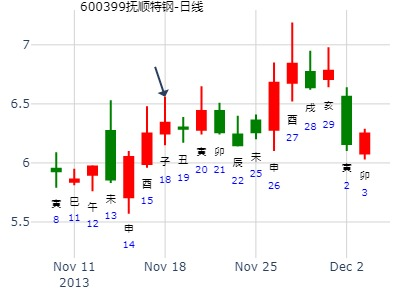
主帖标题: 哪位老师帮忙测下同花顺300033未来的走势？
占事：同花顺300033下周的涨跌
公历时间：2020年11月29日15时1分
干 支：庚子年 丁亥月 丙子日 丙申时
旬 空：辰巳 午未 申酉 辰巳
神 煞：驿马─寅 桃花─酉 日禄─巳 贵人─酉，亥
中国预测网纳甲六爻排盘
震宫：雷地豫（六合）
六神 伏 神 【本 卦】
青龙 ▄▄ ▄▄ 妻财庚戌土
玄武 ▄▄ ▄▄ 官鬼庚申金
白虎 ▄▄▄▄▄ 子孙庚午火 应
螣蛇 ▄▄ ▄▄ 兄弟乙卯木
勾陈 ▄▄ ▄▄ 子孙乙巳火
朱雀 父母庚子水 ▄▄ ▄▄ 妻财乙未土 世
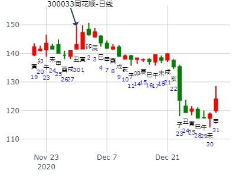
占事：登海种业周卦
时间: 2021-11-11
干支: 辛丑年己亥月癸亥日 (旬空: 子丑 )
豫静卦
白虎 ▅▅ ▅▅ 妻财戌土
腾蛇 ▅▅ ▅▅ 官鬼申金
勾陈 ▅▅▅▅▅ 子孙午火 应
朱雀 ▅▅ ▅▅ 兄弟卯木
青龙 ▅▅ ▅▅ 子孙巳火
玄武 ▅▅ ▅▅ 妻财未土 世
12日子日涨停板。子孙弱极反生？
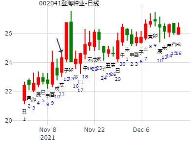
阿晖 求测内容：517200二周走势？ 起卦方式：手动摇卦
公历：2022年11月15日12时35分 http://www.iqing.net
四柱：壬寅年辛亥月壬申日丙午时 (日空：戌亥)
豫静卦
白虎 ▅▅ ▅▅ 妻财戌土
腾蛇 ▅▅ ▅▅ 官鬼申金
勾陈 ▅▅▅▅▅ 子孙午火 应
朱雀 ▅▅ ▅▅ 兄弟卯木
青龙 ▅▅ ▅▅ 子孙巳火
玄武 父母子水▅▅ ▅▅ 妻财未土 世
雷地豫，涨跌反复，总体跌。下周大盘。2008年12月5日
方式：手工指定测下周大盘
公历：2008年12月5日
干支：戊子年 癸亥月 己卯日 辛未时 (12月7号大雪交子月) （旬空：申酉）
震：雷地豫(六合)
六神 伏 神 【本 卦】
勾陈 ▅▅ ▅▅ 妻财戌土
朱雀 ▅▅ ▅▅ 官鬼申金
青龙 ▅▅▅▅▅ 子孙午火 应
玄武 ▅▅ ▅▅ 兄弟卯木
白虎 ▅▅ ▅▅ 子孙巳火
螣蛇 父母子水 ▅▅ ▅▅ 妻财未土 世
子孙应爻月破，出破就涨。子日应爻子孙破。午日值日涨。申可能是月破日合子孙而涨。酉冲卯兄暗动而跌。戌财值日也大跌（机理不明，或为合卯兄）


马后炮学习:
周一午日值日,涨.
周二未日亥卯未三合兄弟局,大跌. (合午火打出一个高点)
周三申合已,月破逢合, 涨.
周四酉日冲旺相卯木暗动,跌.
周五开始(午未空)戌日,值极位,跌? 或子孙妻财世应旬空,大跌? 没整明白.
◆雷地豫:利建侯、行师。
马后炮：
交子月后，子孙午火月破无力。在午日月破值日不破大涨。
戌日墓弱火子孙，大跌。然后就要跌了。
此卦后来出月子孙不破，就是08年大底了。